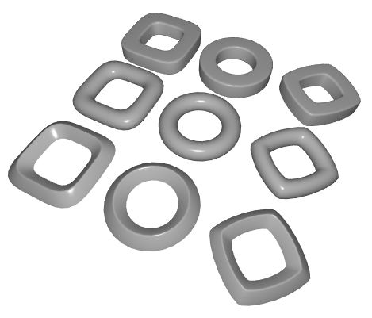

|
Torus ObjectThe torus object is a very powerful and complex parametric polygon object which will allow you to produce advanced shapes. The basic torus is a ring made of a tube that sweeps around back on itself to form a loop, as below. By varying the N1 and N2 properties (see below), significant changes can be made to the shape of the torus. In the top left corner, N1 and N2 are < 1. In the middle both N1 and N2 = 1. In the lower right corner, N1 and N2 > 1. Even stranger shapes can be generated by moving the N1 and N2 values outside of the 0..2 range (negative numbers, for example).  Properties
|